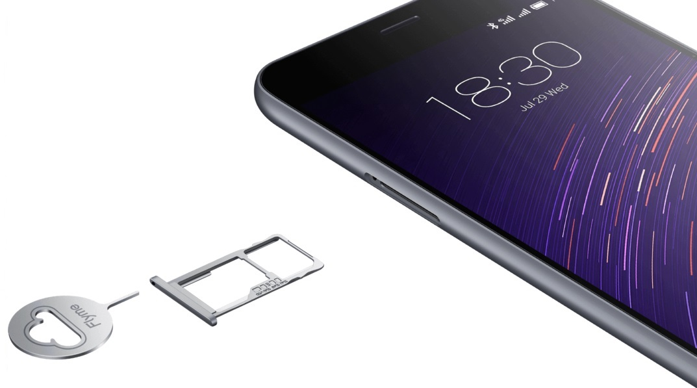
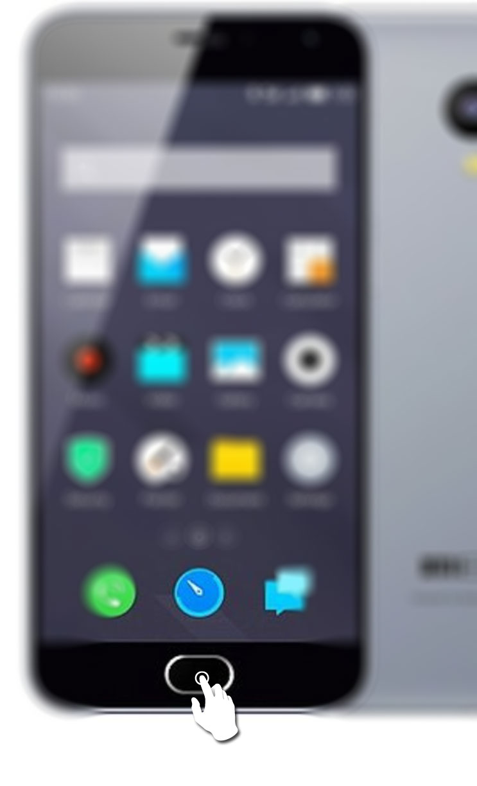
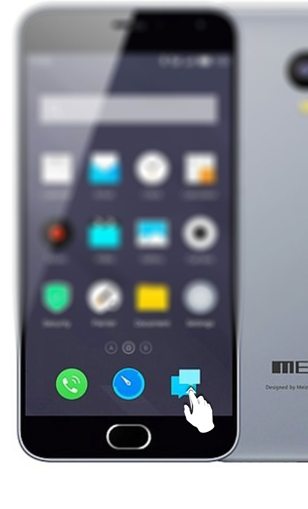
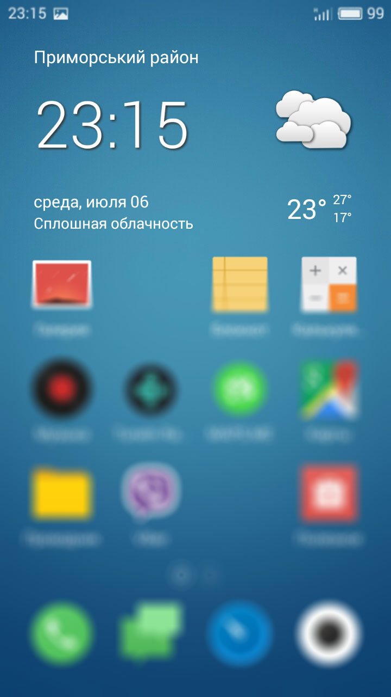
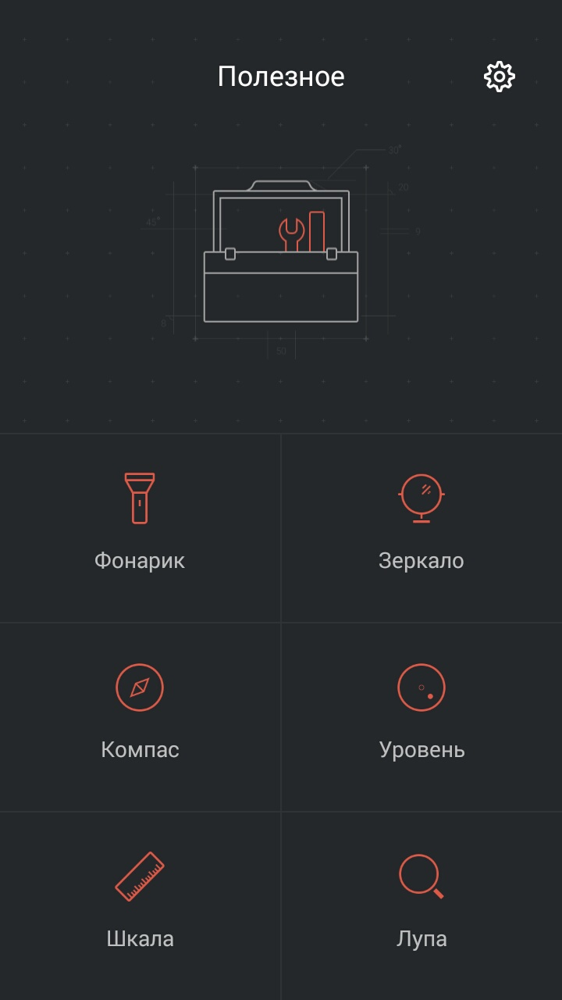
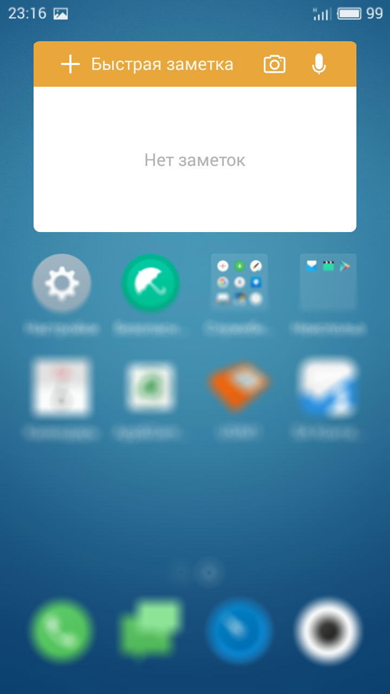
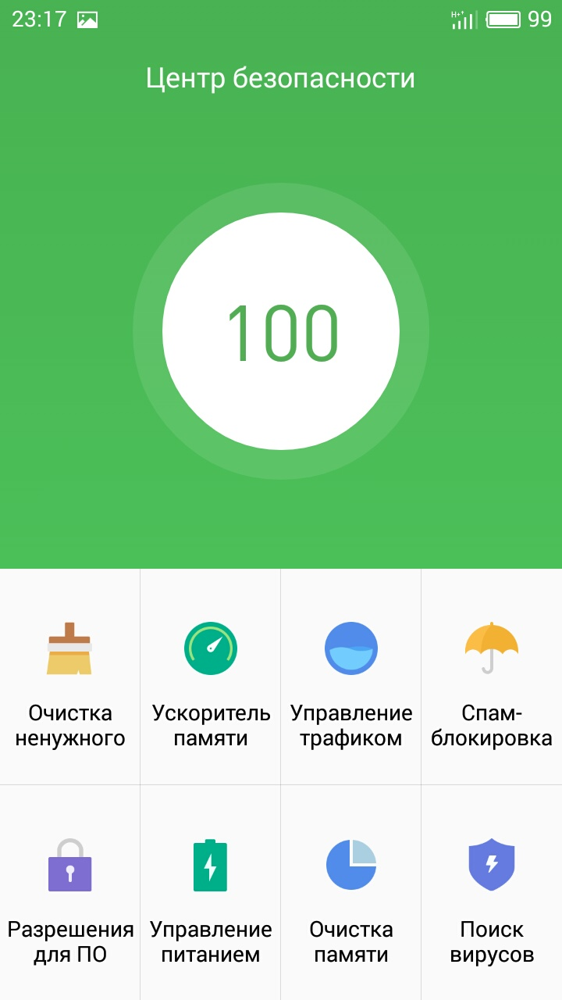
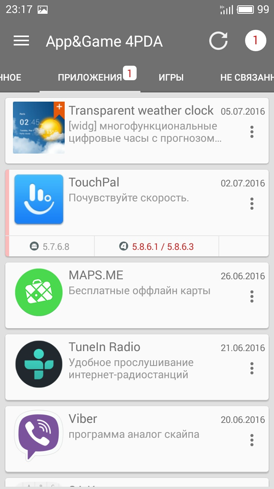
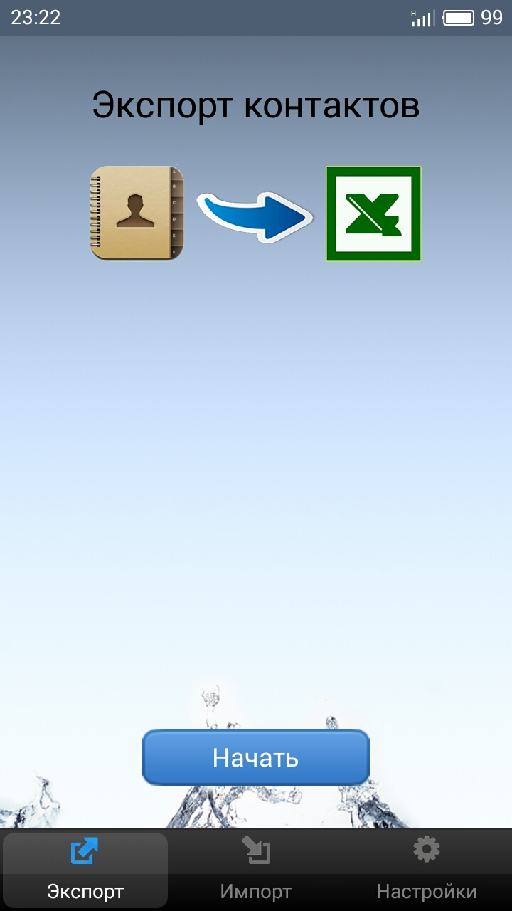

Переходник для симки для других телефонов
Киевстар выдает симки в виде пазла, где можно собрать нужную симку, вкладывая переходники друг в друга.
Посмотрите, возможно, Велком делает также.
Или закажите Nano-SIM и купите переходник.

Телефон для папы
В Meizu M2 используется карточка формата Nano-SIM. Убедитесь, что у вас именно такая карточка.
Киевстар выдает симки в виде пазла, где можно собрать нужную симку, вкладывая переходники друг в друга.
Посмотрите, возможно, Велком делает также.
Или закажите Nano-SIM и купите переходник.
Используйте «ключ» из комплекта телефона или простую скрепку.
Вставьте в отверстие и нежно нажмите — слот выедет из корпуса.
В данном телефоне, к сожалению, нельзя использовать одновременно две симки и флешку, приходится выбирать, или вторая симка, или флешка.
Как вставлять симку с флешкой или две симки нарисовано ниже.
В данном телефоне убрали все «лишние» кнопки, поэтому сначала непонятно, где кнопка «Назад»?
Для того, чтобы в любом приложении выйти назад, надо коснуться единственной кнопки на телефоне.
Не нажать, а просто коснуться.
Чтобы увидеть все запущенные приложения, надо провести пальцем от нижнего края экрана вверх.
Покажется список приложений, где можно выгрузить из памяти ненужные или вообще сразу все.
Создатели телефона отказались от кнопки «Все приложения», вызывающей список всех установленных приложений, поэтому все приложения сразу располагаются на рабочих столах.
Это очень удобно, потому что сразу видно, что стоит на телефоне.
При нажатии на время вызывается будильник, таймер и секундомер.
При нажатии на дату вызывается календарь.
При нажатии на иконку погоды вызывается подробный прогноз погоды.
Несколько полезных в жизни утилит, например, фонарик, компас или уровень.
Виджет позволяет добавлять текстовые, фото и аудио-записи.
Обеспечивает безопасность и быстродействие телефона.
Должен сам автоматически предлагать провести чистку, поиск вирусов и оптимизацию раз в несколько недель.
Я устанавливал на телефон приложения с форума 4PDA. Там выкладываются версии программ, не привязанные к Google, поэтому можно не заводить на телефоне аккаунт гугл.
Программа достаточно простая.
В каталог программ можно попасть через боковое меню. А в каталоге — или смотреть, или искать нужные программы.
На телефон установлена программа для автоматического и ручного экспорта контактов в эксель.
Также она может и импортировать контакты из экселя.
Просто нажать кнопку «Начать». После всех окон будет сохранен файл в папке Download на телефоне.
Залейте отредактированный на компьютере файл, получившийся при экспорте, на телефон в папку Download.
В программе перейдите во вкладку импорт и нажмите кнопку «Начать».